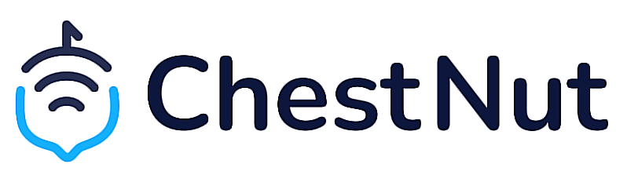
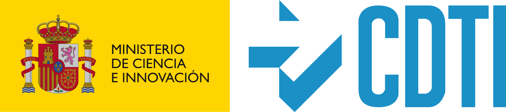

Intro
Chestnut IoT Platform is a initiative of DIGIO Soluciones Digitales S.L. with the financial support of CDTI (Centro para el Desarrollo Tecnológico Industrial).
Chestnut is a high-performance OpenSource platform created to implement IoT solutions horizontally.
Chestnut includes:
- Hub Services
- Backend and Backoffices Services
- Configuration of K8s for cloud deployment
Chestnut is built on Rust, Crystal Lang and JavaScript to achieve a very versatile platform that can run on any server while achieving a high level of performance.
With the support of: 
Architecture
The platform architecture is completely modular. It uses NATS as the main communications broker both in the Hub device services and to communicate the devices with the platform and between the platform services.
All services are dockerized, using Podman in the Hub appliance services and Kubernetes in the cloud services.
Hub
The Hub is the main IoT piece of the platform, it is intended to run on ARM-based devices on Debian or Raspbian-based OS.
Podman is the service orchestrator for the device.
The main services of the device are:
- The device broker. It allows to get the boot configuration, generate a unique device identifier and interface with the platform services and internal services.
- Script runner. It is a service that allows to receive NodeJS-based scripts and to be executed in an isolated environment. These scripts are edited and configured online from the platform backoffice.
- NATS. It is the communication broker, it allows to communicate all the services of the device as well as the load of local historical data.
- Redis. It is the device history storage, it is designed to add business logic that requires consulting data from previous measurements.
Backend
Backend services are composed of different modules:
-
The platform broker that performs the main configuration communication between the devices and the platform.
-
The data broker that stores the data measurements generated by the devices in cloud databases.
-
The alert manager that stores the events of the devices that can generate alerts, and in turn keeps an audit log.
-
API Rest backoffice. Allows to work with the platform through API and through the Chestnut backoffice frontend in ReactJS.
Backoffice
The platform's backoffice is intended to be mainly simple and easy to use, and at the same time serve as a basis for creating new applications and features.
All measurement data are represented on a numerical scale.
The backoffice allows to manage access permissions, devices, and device configuration, allowing to insert scripts and edit them in real time on the different devices.
Mobile application
The linked mobile application is an easily modifiable React Native based mobile application.
It allows provisioning the devices as well as accessing the platform management from any iOS and Android mobile.